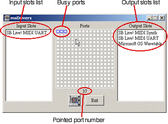
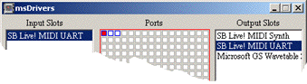
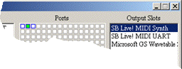

MidiShare Ports Setup

Since MidiShare 1.80, the drivers are separate components. They can be dynamically loaded and unloaded, as any other MidiShare client application.
Each driver is declaring input and output slots, corresponding to the supported input and output ports. In the following examples, the MidiShare Multimedia Driver (msMMSystem.dll) declares 2 slots named 'SB Live! MIDI UART', corresponding to a SB Live card MIDI input and output ports.
To send or receive from the drivers, an application should be connected to MidiShare. Routing the events stream to one slot is done using connections which operates like inter-application connections :
- a MidiShare port can be connected to one or several slots: every event sent to MidiShare on this port will generate a MIDI message on the corresponding slots.
- a slot can be connected to one or several MidiShare ports: every MIDI message received on this slot will generate incoming MidiShare events on the corresponding ports.
The Drivers Manager is a MidiShare client application used to setup the connections between MidiShare ports and driver slots.
 The user interface is similar to msConnect : on the left are the input slots, on the right the output slots and on the middle, a 16 X 16 matrix which represents the 256 MidiShare ports. Ports outlined in blue color are busy ports (ie ports which are connected to at least one slot), the others are free ports (ie ports which are not connected to any slot).
The pointed port number zone dynamically indicates the following:
First click on the ports matrix to select a target port: the selected port become red and you enter into editing mode : the window is framed in red, the slots currently connected to the selected port are highlighted and you can select or deselect a slot in the output or input list. To leave the editing mode, click again on the selected port.

Outside the editing mode, you can select a slot to see all its connections in one glance. The connected ports are then displayed in green. To change a connection, you should first return in editing mode.

To get more information about MidiShare please go to the MidiShare Web pages.
Grame - Computer
Music Research Lab.
9, rue du Garet, BP 1185,
69202 LYON Cedex 01, FRANCE